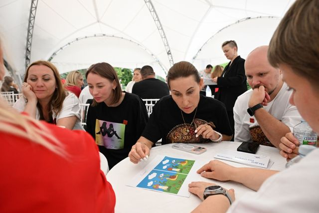
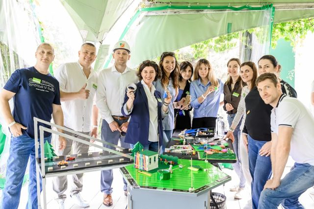
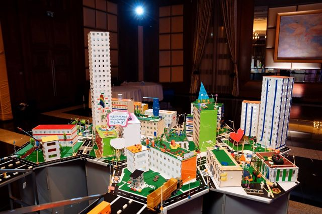
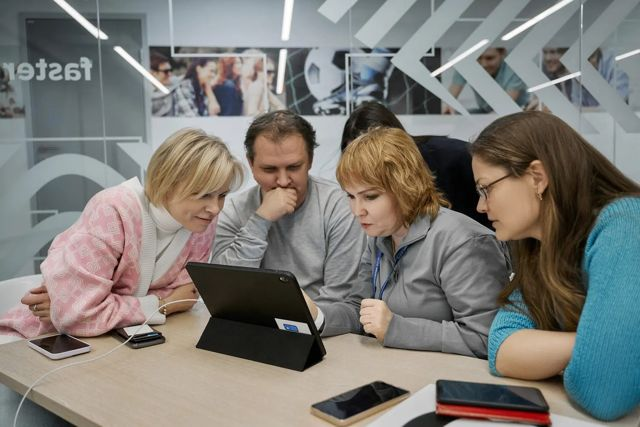
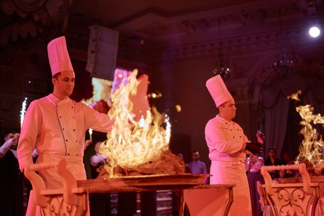
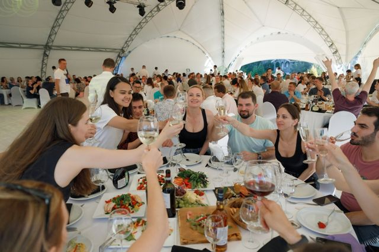

Правка ссылок в статьях
Решение Маши 28.11: главная в первом абзаце, /korporativ/ высоко, от 3 ссылок, программы из списка. Ссылки подсвечены: было и стало, мелко рядом адрес. Письма пока не отправлены.
sia.ru
Опубликовано 27.11. Правка: только перенести главную в первый абзац.
«Каталист» в колонке было 2 раза, после правки 3: новое упоминание и есть ссылка на главную. /korporativ/ и новые программы не добавляем: так решила Маша. YouTube: нет.
Ссылки стало
- Каталист → /
- тимбилдинг → /timbilding/
- выездном тимбилдинге → /programmy/timbilding-na-prirode/
Письмо (не отправлено, ждёт ОК)
Марина, добрый день! Приносим извинения: наш SEO-отдел пересогласовал ссылки. Очень просим поправить колонку «Тимбилдинг и корпоратив: почему цена участника отличается в 2,4 раза» в двух местах: 1. В первом абзаце заменить «По заявкам 2026 года она отличается в 2,4 раза» на «По заявкам, которые получило агентство «Каталист» в 2026 году, она отличается в 2,4 раза». Слово «Каталист» сделать ссылкой: https://catalystrussia.ru/?utm_source=sia.ru&utm_medium=article&utm_campaign=kolonka-korporativ 2. В подписи в конце убрать ссылку со слова «Каталист», текст подписи оставить как есть. Остальной текст без изменений. Спасибо и ещё раз извините за беспокойство. Мария, Каталист +7 991 150-10-01
Было
Подрядчик называет цену всего вечера, а сравнивать нужно цену одного участника. По заявкам 2026 года она отличается в 2,4 раза: от 6 700 ₽ в группе до 100 человек до 2 800 ₽ в группе больше 500. Ниже цифры и шпаргалка, как заказать тимбилдинг/timbilding/ или корпоратив и не переплатить.
Я Мария Варламова, руковожу ивент-агентством «Каталист». С 2010 года мы провели больше 5 000 проектов и получили 16 наград ивент-индустрии, в том числе BEMA. Агентство работает из Москвы и возит программы в регионы: например, в Томске команды на нашем выездном тимбилдинге/programmy/timbilding-na-prirode/ строили город из картона.
…середина колонки без изменений…
Мария Варламова, генеральный директор ивент-агентства «Каталист/».
Стало
Подрядчик называет цену всего вечера, а сравнивать нужно цену одного участника. По заявкам, которые получило агентство «Каталист/» в 2026 году, она отличается в 2,4 раза: от 6 700 ₽ в группе до 100 человек до 2 800 ₽ в группе больше 500. Ниже цифры и шпаргалка, как заказать тимбилдинг/timbilding/ или корпоратив и не переплатить.
Я Мария Варламова, руковожу ивент-агентством «Каталист». С 2010 года мы провели больше 5 000 проектов и получили 16 наград ивент-индустрии, в том числе BEMA. Агентство работает из Москвы и возит программы в регионы: например, в Томске команды на нашем выездном тимбилдинге/programmy/timbilding-na-prirode/ строили город из картона.
…середина колонки без изменений…
Мария Варламова, генеральный директор ивент-агентства «Каталист».
hr-portal.ru
⚠️ Уже опубликовано 24.11 (в реестре pokupka.csv стояло «ждём дату»). Оплачено 5 ссылок.
Формула 1 оставлена. Вместо адаптации, двух кейсов и /timbilding/ стоят главная, /korporativ/, цепная реакция и WOW Башня. Объём почти тот же, фото те же 6.
Лимиты площадки (Валерий, 22.11): 4-5 ссылок, до 6 фото, YouTube не нужен («на рабочем месте у людей не работает»).
Ссылки стало
- организация тимбилдинга → /
- корпоративные мероприятия для сотрудников → /korporativ/
- «Гонки Формула-1» → /teambuilding/vse-programmy/formula-1/
- цепную реакцию → /teambuilding/vse-programmy/cepnaya-reakciya/
- «WOW Башня» → /teambuilding/vse-programmy/wow-bashnya/
Файлы: statya-hr-portal-2811.docx · pravki-hr-portal-2811.docx
Письмо (не отправлено, ждёт ОК)
Валерий, добрый день! Приносим извинения: наш SEO-отдел пересогласовал ссылки. Очень просим заменить текст статьи «Тимбилдинг для адаптации: как познакомить новичков с коллегами и проверить результат» на приложенный. Ссылок по-прежнему 5, фото те же. Чтобы было проще, во втором файле все 8 правок списком «было → стало». Спасибо и ещё раз извините за беспокойство. Виктория Смирнова PR-менеджер ивент-агентства «Каталист» catalystrussia.ru info@catalystrussia.ru
Было
Тимбилдинг для адаптации: как познакомить новичков с коллегами и проверить результат
Мария Варламова, основатель агентства „Каталист“
Тимбилдинг для адаптации помогает новичкам познакомиться с коллегами, к которым они смогут обратиться по работе. Для этого соберите в каждой команде новых и опытных сотрудников из разных отделов и дайте им одну общую задачу.
С 2010 года наше агентство провело больше 5 000 проектов для групп от 50 до 3 000 человек. У нас больше 50 своих программ и 16 наград ивент-индустрии. Покажу, как собрать командный день под три задачи HR: адаптацию, вовлечённость и удержание.
Как поставить задачу на командный день
Заявка часто звучит так: «Хотим тимбилдинг на 100 человек, что-нибудь интересное». Из такой заявки ведущий узнает число участников. Чтобы собрать программу, ему нужна цель встречи.
Перед выбором формата ответьте на три вопроса:
Какую проблему решаем. Новички не встраиваются, отделы не общаются, команда устала после тяжёлого проекта.
Кто участвует. Сколько новичков, какие отделы, кто из руководителей.
Что изменится через месяц и как это увидеть. Об этом подробно в разделе про замер.
Разница в формулировке видна сразу. Плохо: «сплотить коллектив». Хорошо: «чтобы 40 человек, пришедших за полгода, знали в лицо коллег из смежных отделов и могли к ним обратиться без посредников». Под вторую задачу ведущий соберёт команды и сценарий иначе, чем под первую.
Адаптация: собираем смешанные команды
На встрече дайте участникам повод обратиться друг к другу. Например, один коллега читает чертёж, другой собирает детали, а третий проверяет, что получилось.
Работает это при двух условиях. Первое: команды собираем заранее по списку от HR, в каждой новички вперемешку с опытными сотрудниками из разных отделов. Если люди разобьются сами, новички окажутся вместе и поговорят друг с другом. Второе: в задании роли распределены так, что одному не справиться.
Пример механики. Для компании Wilo мы провели «Гонки Формула-1»/teambuilding/vse-programmy/formula-1/ на 350 сотрудников. Задача была праздничная, но устройство игры то же. Команды собирали собственные болиды, в каждой команде было 10 ролей, люди становились инженерами, конструкторами, дизайнерами, гонщиками и болельщиками. Чтобы болид выдержал техническую проверку жюри и три технических круга, людям пришлось договариваться. Собрали больше 50 болидов, на старт вышли все команды. Подробности и фото в кейсе гонок для Wilo/cases/case-formula1.html.
Участники собирают каркас болида на гонках для Wilo
Команды у своих болидов перед стартом, «Гонки Формула-1»
Замера удержания по этому проекту у нас нет. А если вы выстраиваете систему целиком, у нас есть разбор, где этапы адаптации новых сотрудников/adaptaciya-novyh-sotrudnikov/ расписаны от первого дня до конца испытательного срока.
Вовлечённость: показываем вклад каждой команды
Выберите задание, в котором вклад каждой команды виден в общем результате.
В одном из проектов участники собрали картину из 16 секций. Каждая команда писала свою часть полотна. Фотографии и описание задачи есть в кейсе «Корпоративная картина»/cases/case-kartina.html. Целиком картину до финала не видит никто. Линии должны совпасть на стыках, а цвета по тону, поэтому команды всё время сверяются с соседями. В финале секции соединяют, и получается одна картина.
«Корпоративная картина»: команды пишут свои секции полотна за общими столами
Команды показывают готовые секции картины
Для HR здесь важны две вещи. Задание повторяет реальную работу: у каждого свой участок, а результат общий. И картина остаётся в офисе: к ней можно вернуться на планёрке, когда отделы опять не могут договориться.
Удержание: связываем встречи в течение года
Один праздник в год людей не удержит. Работает связка событий, которые идут по году:
Встреча для новичков в первые месяцы работы.
Командный день после большого проекта или реорганизации.
Общий праздник, например новогодний корпоратив.
Связка работает, когда каждое событие продолжает предыдущее. На командном дне участвуют те же смешанные группы, что на встрече для новичков, и знакомство не обнуляется.
Команда с дипломом и клетчатым флагом на финише гонок
На каждой встрече назовите заслуги коллег. Руководитель называет конкретных людей и конкретные дела, а не благодарит «всех за отличный год».
Внутренним коммуникациям советую с первого дня договориться о фото и видео. Снимки с ивента потом работают месяцами: во внутреннем канале, в материалах для кандидатов, на карьерной странице. Подборку форматов под разные задачи мы собрали на странице про программы тимбилдинга для сотрудников/timbilding/.
Что проверить через месяц
Дополните ответы цифрами.
Короткий опрос до и после. Три вопроса за неделю до ивента и те же через месяц. Например: «Знаю, к кому обратиться в соседнем отделе», «Мне комфортно задать вопрос коллеге не из моей команды», «Понимаю, как моя работа влияет на результат компании». Шкала от 1 до 5.
Испытательный срок. Сравните, какая доля новичков прошла его до и после того, как вы добавили встречу для новичков. Сравнивайте группы с похожими условиями работы.
eNPS. Если вы его уже меряете, отметьте дату ивента и посмотрите на следующий замер.
Главное правило: первый замер делайте до ивента. Если начать после, сравнивать будет не с чем.
Когда тимбилдинг не поможет
Бывают случаи, когда тратить на него бюджет не стоит. Если люди уходят из-за зарплаты, перегрузки или конфликта с руководителем, сначала разберитесь с причиной.
Если планируете встречу на выходных, заранее спросите сотрудников, готовы ли они участвовать.
Шпаргалка для HR
Сформулируйте задачу одной фразой: кто и что должен начать делать иначе.
Сделайте замер до ивента.
Соберите команды сами: новички вперемешку с опытными, отделы вперемешку.
Выберите задание, где одному не справиться и есть общий итог.
Добавьте в программу признание конкретных людей.
Через месяц повторите замер и покажите руководству разницу.
Позовите в подготовку двух-трёх сотрудников из разных отделов. Они помогут собрать команды и объяснить коллегам, зачем нужна встреча.
Об авторе. Мария Варламова, основатель агентства „Каталист“. Занимается организацией тимбилдингов с 2007 года.
Стало
Тимбилдинг для адаптации: как познакомить новичков с коллегами и проверить результат
Мария Варламова, основатель агентства «Каталист»
Тимбилдинг для адаптации помогает новичкам познакомиться с коллегами, к которым они смогут обратиться по работе. Для этого соберите в каждой команде новых и опытных сотрудников из разных отделов и дайте им одну общую задачу. Так устроены организация тимбилдинга/ и корпоративные мероприятия для сотрудников/korporativ/ в агентстве «Каталист».
С 2010 года агентство «Каталист» провело больше 5 000 проектов для групп от 50 до 3 000 человек. У нас больше 50 своих программ и 16 наград ивент-индустрии. Покажу, как собрать командный день под три задачи HR: адаптацию, вовлечённость и удержание.
Как поставить задачу на командный день
Заявка часто звучит так: «Хотим тимбилдинг на 100 человек, что-нибудь интересное». Из такой заявки ведущий узнает число участников. Чтобы собрать программу, ему нужна цель встречи.
Перед выбором формата ответьте на три вопроса:
Какую проблему решаем. Новички не встраиваются, отделы не общаются, команда устала после тяжёлого проекта.
Кто участвует. Сколько новичков, какие отделы, кто из руководителей.
Что изменится через месяц и как это увидеть. Об этом подробно в разделе про замер.
Разница в формулировке видна сразу. Плохо: «сплотить коллектив». Хорошо: «чтобы 40 человек, пришедших за полгода, знали в лицо коллег из смежных отделов и могли к ним обратиться без посредников». Под вторую задачу ведущий соберёт команды и сценарий иначе, чем под первую.
Адаптация: собираем смешанные команды
На встрече дайте участникам повод обратиться друг к другу. Например, один коллега читает чертёж, другой собирает детали, а третий проверяет, что получилось.
Работает это при двух условиях. Первое: команды собираем заранее по списку от HR, в каждой новички вперемешку с опытными сотрудниками из разных отделов. Если люди разобьются сами, новички окажутся вместе и поговорят друг с другом. Второе: в задании роли распределены так, что одному не справиться.
Пример механики. Для компании Wilo команда «Каталист» провела «Гонки Формула-1»/teambuilding/vse-programmy/formula-1/ на 350 сотрудников. Задача была праздничная, но устройство игры то же. Команды собирали собственные болиды, в каждой команде было 10 ролей, люди становились инженерами, конструкторами, дизайнерами, гонщиками и болельщиками. Чтобы болид выдержал техническую проверку жюри и три технических круга, людям пришлось договариваться. Собрали больше 50 болидов, на старт вышли все команды.
Участники собирают каркас болида на гонках для Wilo
Команды у своих болидов перед стартом, «Гонки Формула-1»
Замера удержания по этому проекту у нас нет. Та же механика работает, когда команды строят цепную реакцию/teambuilding/vse-programmy/cepnaya-reakciya/: каждая отвечает за свой участок механизма, и он срабатывает целиком, только если участки сошлись на стыках.
Вовлечённость: показываем вклад каждой команды
Выберите задание, в котором вклад каждой команды виден в общем результате.
В одном из проектов участники собрали картину из 16 секций. Каждая команда писала свою часть полотна. Целиком картину до финала не видит никто. Линии должны совпасть на стыках, а цвета по тону, поэтому команды всё время сверяются с соседями. В финале секции соединяют, и получается одна картина. По тому же принципу устроена «WOW Башня»/teambuilding/vse-programmy/wow-bashnya/: команды собирают части арт-объекта высотой 10 метров, и в финале он оживает как единый механизм.
«Корпоративная картина»: команды пишут свои секции полотна за общими столами
Команды показывают готовые секции картины
Для HR здесь важны две вещи. Задание повторяет реальную работу: у каждого свой участок, а результат общий. И картина остаётся в офисе: к ней можно вернуться на планёрке, когда отделы опять не могут договориться.
Удержание: связываем встречи в течение года
Один праздник в год людей не удержит. Работает связка событий, которые идут по году:
Встреча для новичков в первые месяцы работы.
Командный день после большого проекта или реорганизации.
Общий праздник, например новогодний корпоратив.
Связка работает, когда каждое событие продолжает предыдущее. На командном дне участвуют те же смешанные группы, что на встрече для новичков, и знакомство не обнуляется.
Команда с дипломом и клетчатым флагом на финише гонок
На каждой встрече назовите заслуги коллег. Руководитель называет конкретных людей и конкретные дела, а не благодарит «всех за отличный год».
Внутренним коммуникациям советую с первого дня договориться о фото и видео. Снимки с ивента потом работают месяцами: во внутреннем канале, в материалах для кандидатов, на карьерной странице.
Что проверить через месяц
Дополните ответы цифрами.
Короткий опрос до и после. Три вопроса за неделю до ивента и те же через месяц. Например: «Знаю, к кому обратиться в соседнем отделе», «Мне комфортно задать вопрос коллеге не из моей команды», «Понимаю, как моя работа влияет на результат компании». Шкала от 1 до 5.
Испытательный срок. Сравните, какая доля новичков прошла его до и после того, как вы добавили встречу для новичков. Сравнивайте группы с похожими условиями работы.
eNPS. Если вы его уже меряете, отметьте дату ивента и посмотрите на следующий замер.
Главное правило: первый замер делайте до ивента. Если начать после, сравнивать будет не с чем.
Когда тимбилдинг не поможет
Бывают случаи, когда тратить на него бюджет не стоит. Если люди уходят из-за зарплаты, перегрузки или конфликта с руководителем, сначала разберитесь с причиной.
Если планируете встречу на выходных, заранее спросите сотрудников, готовы ли они участвовать.
Шпаргалка для HR
Сформулируйте задачу одной фразой: кто и что должен начать делать иначе.
Сделайте замер до ивента.
Соберите команды сами: новички вперемешку с опытными, отделы вперемешку.
Выберите задание, где одному не справиться и есть общий итог.
Добавьте в программу признание конкретных людей.
Через месяц повторите замер и покажите руководству разницу.
Позовите в подготовку двух-трёх сотрудников из разных отделов. Они помогут собрать команды и объяснить коллегам, зачем нужна встреча.
Об авторе. Мария Варламова, основатель агентства «Каталист». Занимается организацией тимбилдингов с 2007 года.
all-events.ru
Не опубликовано (27.11 просили логин, ответили 28.11). Оплачено «2 ссылки», ставим 3.
Добавлен раздел «Как перенести формат на свою команду» (факты со страницы программы): текст 5 261 → 6 516 знаков. Ссылка на кейс заменена на страницу программы.
Лимиты площадки: до 4 ссылок и все на один домен (поэтому YouTube нельзя), фото внутри текста нельзя, только обложка.
Ссылки стало
- тимбилдинг-агентство → /
- организация корпоративных мероприятий → /korporativ/
- «Фестиваль фудтраков» → /teambuilding/vse-programmy/festival-fudtrakov/
Файлы: statya-all-events-2811.docx
Письмо (не отправлено, ждёт ОК)
Алексей, добрый день! Приносим извинения: наш SEO-отдел пересогласовал ссылки. Очень просим взять для публикации приложенный текст вместо прежнего. В нём 3 ссылки на наш сайт и новый раздел о том, как перенести формат на свою команду. Обложка та же. Спасибо и ещё раз извините за беспокойство. Виктория Смирнова PR-менеджер ивент-агентства «Каталист» catalystrussia.ru info@catalystrussia.ru
Было
Тимбилдинг на 350 человек при лимите 800 000 ₽: четыре формата в одной игре
Ирек Мансуров, исполнительный директор агентства „Каталист“, автор программы „Фестиваль фудтраков“
Тимбилдинг на 350 человек для «Райффайзенбанка» должен был соединить творчество, кулинарию, конструирование и бизнес-игру. Мы собрали 20 команд на «Фестивале фудтраков». Банк заказал фестиваль ещё три раза.
С 2010 года наше агентство провело больше 5 000 проектов для групп от 50 до 3 000 человек и получило 16 наград ивент-индустрии. Покажу, как мы собрали четыре формата в одной игре. Фото и видео есть в кейсе «Фестиваль фудтраков» для «Райффайзенбанка»/case_festival_fidtrakov1/.
Что банк просил учесть в брифе
Финансовая дирекция банка собирала сотрудников на летний тимбилдинг на открытой площадке в Москве. В брифе были три условия.
Четыре формата. Опрос показал, что сотрудники любят творческие и кулинарные тимбилдинги и конструирование, а руководители отделов и эйчары хотят бизнес-тренинги и проработку бизнес-задач.
Новое. Мы работали с банком несколько лет и провели почти все свои программы. Банк попросил предложить новый для команды формат.
Лимит бюджета по брифу. До 800 000 ₽.
По моей оценке, четыре отдельные активности заняли бы от пяти до восьми часов и вышли за лимит. Я искал сюжет, в котором команды могли бы делать всё одновременно.
Как фудтрак связал четыре формата
Идею подсказали фестивали уличной еды. Для банка мы впервые объединили четыре формата в одной игре. У каждой команды были четыре задачи:
Построить фудтрак.
Оформить и раскрасить его.
Приготовить еду.
Рекламировать и продавать блюда.
Правило для организатора: если бриф требует несколько форматов, ищите сюжет, где форматы стали ролями, а не этапами.
Как распределили роли в командах
Команде нужно строить, рисовать, готовить, считать цены и продавать. Кто любит работать руками, строит. Кто умеет рисовать, оформляет. Кто предпочитает считать и продавать, назначает цены и придумывает рекламу.
Мы распределили 350 участников по 20 командам. Каждую команду мы делили на две смены: пока одна готовит и продаёт, другая ходит по фестивалю и тратит игровые деньги, потом они меняются. За две смены каждая команда побывала и продавцом, и покупателем.
Команды сами выбирали кухню: греческую, еврейскую, американскую, мексиканскую. Блюда тоже разные: бургеры, фалафель, панкейки, хот-доги. Участники построили 20 фудтраков и сами занялись ценообразованием, смотрели цены и рекламу конкурентов, привлекали покупателей. Вот что они делали сверх программы:
Один участник предлагал услуги повара другим командам.
Другой за игровую валюту выкрикивал рекламные слоганы чужих команд.
Одна участница надела картонный рекламный плакат.
Одна команда принесла мягкую мебель и сделала летнее кафе вокруг фудтрака.
Закрываем операционные риски до старта
До старта мы подготовили рецепты, продукты, схему расчётов и чертежи.
Еда для тех, кто не умеет готовить. Мы придумали простые рецепты уличных блюд, которые приготовит новичок. Командам выдали технологические карты, фотографии блюд и набор продуктов, а рядом работали повара и инструкторы.
Санитария. Продукты купили в день мероприятия, у каждого есть сертификат качества и соответствия. Из-за жары не брали быстропортящееся: свежую рыбу и грибы. Менеджеры проверили свежесть и сроки годности, овощи и фрукты помыли, все работали в перчатках.
Деньги. Мы ввели игровую валюту, поэтому участникам не пришлось тратить личные. Первый капитал команда получала за построенный фудтрак: 25 000 игровых рублей. По итогам голосования команда с лучшим оформлением получала ещё 3 000 игровых рублей.
Чертежи и свобода. Командам выдали схемы с размерами деталей и референсы по дизайну. Жёсткое правило было одно: фудтрак ездит на колёсах, и внутри можно готовить. Всё остальное команды придумывали сами, и мы поощряли нестандартные решения.
Инструктор на команду. Он подсказывает по технике, следит за функциональностью фудтрака и техникой безопасности.
Выбираем площадку и считаем время
Проект назначили на 26 августа, на подготовку было три месяца. Площадку выбрали на Крылатских Холмах, Apple Hill: большая лужайка, вокруг природа, для вечерней программы поставили шатёр.
Что получилось
Победителя определили по прибыли в игровой валюте. Первое место заняла команда «Шалом», которая готовила фалафель.
С этим проектом мы пошли на премию «Событие года». В номинации «Тимбилдинг года» было 10 номинантов, на VI церемонии мы победили. Потом проект попал в шорт-лист премии «Золотой пазл», где его защищали очно перед жюри.
В кейсе нет замеров удержания и вовлечённости. Фестиваль проходил летом на открытой площадке. Для зимы или закрытого зала нужно заново подобрать площадку и рассчитать время на сборку.
Шпаргалка организатору
Выпишите условия брифа в один список и отметьте те, что спорят друг с другом.
Ищите сюжет, где форматы становятся ролями, а не этапами программы.
Задайте одно жёсткое правило и оставьте свободу внутри него.
Введите игровую валюту: она даёт рыночную динамику без личных денег участников.
Назначьте инструктора на каждую команду.
Продукты закупайте в день мероприятия и без скоропорта, если на улице жарко.
Если вы планируете встречу для своей команды, посмотрите другие форматы для организации корпоратива/korporativ/.
Об авторе. Ирек Мансуров, исполнительный директор агентства „Каталист“, автор программы „Фестиваль фудтраков“.
Стало
Тимбилдинг на 350 человек при лимите 800 000 ₽: четыре формата в одной игре
Ирек Мансуров, исполнительный директор агентства «Каталист», автор программы «Фестиваль фудтраков»
Тимбилдинг на 350 человек для «Райффайзенбанка» должен был соединить творчество, кулинарию, конструирование и бизнес-игру. С этой задачей финансовая дирекция банка пришла в тимбилдинг-агентство/ «Каталист», и мы собрали 20 команд на «Фестивале фудтраков». Потом банк заказал фестиваль ещё три раза.
С 2010 года агентство «Каталист» провело больше 5 000 проектов для групп от 50 до 3 000 человек: тимбилдинги, праздники, организация корпоративных мероприятий/korporativ/. У нас 16 наград ивент-индустрии. Покажу, как мы собрали четыре формата в одной игре.
Что банк просил учесть в брифе
Финансовая дирекция банка собирала сотрудников на летний тимбилдинг на открытой площадке в Москве. В брифе были три условия.
Четыре формата. Опрос показал, что сотрудники любят творческие и кулинарные тимбилдинги и конструирование, а руководители отделов и эйчары хотят бизнес-тренинги и проработку бизнес-задач.
Новое. Мы работали с банком несколько лет и провели почти все свои программы. Банк попросил предложить новый для команды формат.
Лимит бюджета по брифу. До 800 000 ₽.
По моей оценке, четыре отдельные активности заняли бы от пяти до восьми часов и вышли за лимит. Я искал сюжет, в котором команды могли бы делать всё одновременно.
Как фудтрак связал четыре формата
Идею подсказали фестивали уличной еды. Для банка мы впервые объединили четыре формата в одной игре, сейчас это отдельная программа «Фестиваль фудтраков»/teambuilding/vse-programmy/festival-fudtrakov/. У каждой команды были четыре задачи:
Построить фудтрак.
Оформить и раскрасить его.
Приготовить еду.
Рекламировать и продавать блюда.
Правило для организатора: если бриф требует несколько форматов, ищите сюжет, где форматы стали ролями, а не этапами.
Как распределили роли в командах
Команде нужно строить, рисовать, готовить, считать цены и продавать. Кто любит работать руками, строит. Кто умеет рисовать, оформляет. Кто предпочитает считать и продавать, назначает цены и придумывает рекламу.
Мы распределили 350 участников по 20 командам. Каждую команду мы делили на две смены: пока одна готовит и продаёт, другая ходит по фестивалю и тратит игровые деньги, потом они меняются. За две смены каждая команда побывала и продавцом, и покупателем.
Команды сами выбирали кухню: греческую, еврейскую, американскую, мексиканскую. Блюда тоже разные: бургеры, фалафель, панкейки, хот-доги. Участники построили 20 фудтраков и сами занялись ценообразованием, смотрели цены и рекламу конкурентов, привлекали покупателей. Вот что они делали сверх программы:
Один участник предлагал услуги повара другим командам.
Другой за игровую валюту выкрикивал рекламные слоганы чужих команд.
Одна участница надела картонный рекламный плакат.
Одна команда принесла мягкую мебель и сделала летнее кафе вокруг фудтрака.
Закрываем операционные риски до старта
До старта мы подготовили рецепты, продукты, схему расчётов и чертежи.
Еда для тех, кто не умеет готовить. Мы придумали простые рецепты уличных блюд, которые приготовит новичок. Командам выдали технологические карты, фотографии блюд и набор продуктов, а рядом работали повара и инструкторы.
Санитария. Продукты купили в день мероприятия, у каждого есть сертификат качества и соответствия. Из-за жары не брали быстропортящееся: свежую рыбу и грибы. Менеджеры проверили свежесть и сроки годности, овощи и фрукты помыли, все работали в перчатках.
Деньги. Мы ввели игровую валюту, поэтому участникам не пришлось тратить личные. Первый капитал команда получала за построенный фудтрак: 25 000 игровых рублей. По итогам голосования команда с лучшим оформлением получала ещё 3 000 игровых рублей.
Чертежи и свобода. Командам выдали схемы с размерами деталей и референсы по дизайну. Жёсткое правило было одно: фудтрак ездит на колёсах, и внутри можно готовить. Всё остальное команды придумывали сами, и мы поощряли нестандартные решения.
Инструктор на команду. Он подсказывает по технике, следит за функциональностью фудтрака и техникой безопасности.
Выбираем площадку и считаем время
Проект назначили на 26 августа, на подготовку было три месяца. Площадку выбрали на Крылатских Холмах, Apple Hill: большая лужайка, вокруг природа, для вечерней программы поставили шатёр.
Что получилось
Победителя определили по прибыли в игровой валюте. Первое место заняла команда «Шалом», которая готовила фалафель.
С этим проектом команда «Каталист» пошла на премию «Событие года». В номинации «Тимбилдинг года» было 10 номинантов, на VI церемонии мы победили. Потом проект попал в шорт-лист премии «Золотой пазл», где его защищали очно перед жюри.
В кейсе нет замеров удержания и вовлечённости. Фестиваль проходил летом на открытой площадке. Для зимы или закрытого зала нужно заново подобрать площадку и рассчитать время на сборку.
Как перенести формат на свою команду
Фестиваль, который мы придумали для банка, теперь проходит для групп от 50 до 500 человек. Программа идёт 3,5-4 часа на улице, вместе с приветствием и финалом больше четырёх часов.
Меню выбирают заранее: на выбор 20 кухонь мира, по одной на каждый фургончик. Еды и напитков получается так много, что фуршет или обед можно убрать из сметы.
День идёт в шесть этапов:
Деление на команды. Участники вытягивают из коробки гаечные ключи разного размера: у кого ключи совпали, те играют вместе.
Экипировка и инструктаж. Команды получают инструменты, реквизит, защитные халаты и перчатки.
Конструирование. Команды собирают фургоны, придумывают фирменный стиль и бренд.
Кухня. Команды делят зоны ответственности и продумывают ценовую политику, им помогает кулинарный консультант.
Фестиваль. С первой партией еды начинаются продажи: часть команды стоит на кассе, часть занимается маркетингом, остальные пробуют еду соседей.
Итоги. Команды подсчитывают выручку в игровой валюте, ведущий награждает победителей.
Если хочется целого дня, днём проводят тимбилдинг, а вечером развлекательную программу в тех же декорациях фестиваля.
Шпаргалка организатору
Выпишите условия брифа в один список и отметьте те, что спорят друг с другом.
Ищите сюжет, где форматы становятся ролями, а не этапами программы.
Задайте одно жёсткое правило и оставьте свободу внутри него.
Введите игровую валюту: она даёт рыночную динамику без личных денег участников.
Назначьте инструктора на каждую команду.
Продукты закупайте в день мероприятия и без скоропорта, если на улице жарко.
Об авторе. Ирек Мансуров, исполнительный директор агентства «Каталист», автор программы «Фестиваль фудтраков».
calend.ru
Оплачено, материалы отправлены 28.11 в 16:19, не опубликовано.
Ссылки на Нейрокалендарь и Корпоративную картину сняты, текст про них остался. «Мегаполис» оставлен. 4 182 → 4 339 знаков.
Лимиты площадки: до 5 000 знаков, до 3 ссылок, до 3 фото. Поэтому без YouTube и без удлинения.
Ссылки стало
- агентство «Каталист» → /
- корпоративы для сотрудников → /korporativ/
- «Мегаполисе» → /teambuilding/vse-programmy/gorodskaya-strojka/
Файлы: katalist-korporativnyj-kalendar-2811.docx
Письмо (не отправлено, ждёт ОК)
Дарья, добрый день! Приносим извинения: наш SEO-отдел пересогласовал ссылки. Очень просим заменить текст статьи «Корпоративный календарь: как выбрать формат для каждой даты и не повторять банкет» на приложенный. Поменялись первый абзац и ссылки, их по-прежнему 3, объём 4 300 знаков, фото те же. Спасибо и ещё раз извините за беспокойство. Виктория Смирнова PR-менеджер ивент-агентства «Каталист» catalystrussia.ru info@catalystrussia.ru
Было
Корпоративный календарь: как выбрать формат для каждой даты и не повторять банкет
Новый год, 8 Марта, 23 Февраля, день компании, день профессии: что выбирать по задаче и размеру группы, чтобы праздник работал на команду.
Корпоративные даты стоят в календаре заранее, а формат у них чаще всего один: стол, тосты, музыка. Люди сидят с теми, с кем сидят в офисе, и через неделю праздник забыт.
Я Мария Варламова, генеральный директор ивент-агентства «Каталист». С 2010 года мы провели больше 5 000 проектов, у нас 50+ программ и 16 наград. У каждой даты своя задача, поэтому формат тоже нужен свой.
Начинаем с задачи даты, а не с формата
Новый год: подвести итоги года и собрать всех в одном зале.
8 Марта и 23 Февраля: поздравить так, чтобы никто не остался зрителем.
День рождения компании: поблагодарить людей и познакомить новичков со старожилами.
День профессии: показать, что работа коллег заметна.
Новый год: общий результат
Если банкет остаётся, поставьте перед ним командную игру на 2-3 часа: она перемешивает людей до того, как они сядут за столы. Для темы календаря подойдёт «Нейро календарь»/teambuilding/vse-programmy/neiro-kalendar/. Каждая команда делает один месяц с помощью нейросетей: картинки, текст, музыка, озвучка, монтаж ролика. В финале ролики собираются в общий календарь. Программа идёт 2-2,5 часа для групп от 50 до 200 человек, готовиться не нужно.
8 Марта и 23 Февраля: один праздник вместо двух
Две даты разделяют 13 дней, их можно отметить одним корпоративом: команды смешанные, играют все, программа занимает 2-3 часа. Повод подчёркивают оформление, награды и подарки. Так проще бюджету, и офис не останавливается дважды.
К 8 Марта берут творческие форматы. В «Корпоративной картине»/teambuilding/vse-programmy/teambuilding-obshaya-kartina/ команды рисуют участки одной большой картины и не знают общего сюжета, пока участки не сложат вместе. Соседям приходится договариваться. Картина от 3 метров остаётся в офисе. Программа идёт 2,5 часа для групп от 50 до 500 человек.
Фото: «Корпоративная картина»: команды работают над своими частями общей картины, вид сверху
К 23 Февраля берут инженерные форматы. В «Мегаполисе»/teambuilding/vse-programmy/gorodskaya-strojka/ команды строят город из более чем 100 объектов, а районы должны сойтись в единую инфраструктуру. В финале город подключают к электросети и зажигают фонари. Программа идёт 2,5-3 часа для групп от 50 до 500 человек.
Бронируйте за 3-4 недели: выбор форматов шире. Экспресс-сборку за 1-2 недели тоже делаем.
День рождения компании и юбилей
День рождения компании отмечают каждый год, задача внутренняя: поблагодарить людей и познакомить новичков со старожилами. Официальная часть короткая, 10-15 минут. Юбилей это круглая дата, на него зовут партнёров и клиентов, официальная часть длиннее, 40-60 минут. Разницу видно по списку гостей: только свои сотрудники или ещё и внешние гости. Дайте ведущему события года и имена людей, тогда шутки прозвучат про вашу команду.
Фото: Командный день на лужайке: общий кадр команды
Почему игра работает лучше стола
Команды в игре собирает организатор, поэтому в одной команде оказываются люди из разных отделов. Для финансовой дирекции «Райффайзенбанка» мы провели «Фестиваль фудтраков» на 350 человек. 20 команд построили каждая свой фудтрак и продавали блюда за игровую валюту. Одна команда принесла диваны и открыла рядом летнее кафе. Банк заказывал этот формат ещё три раза.
Фото: «Фестиваль фудтраков»: участники у расписного фудтрака
День профессии и размер группы
Формат дня профессии лучше связать с работой людей. Для инженерных профессий подойдут конструкторские игры вроде «Машины Голдберга», для творческих «Камера! Мотор!»: команды снимают мини-фильмы от идеи до монтажа.
Группы от 25 до 50 человек: часть форматов допускает от 25, остальные начинаются с 50. Группы от 50 до 500 человек: подходят почти все программы, команды делят на районы или участки. От 200 до 3 000 человек это уже большой праздник со сценой, светом и экранами. Наши программы на группы меньше 25 человек не рассчитаны.
Чего игра не заменит
Игра на 2-3 часа не заменяет банкет: подарки и угощение считаются отдельно. Данных о том, как такой праздник влияет на вовлечённость, у меня нет. Не назначайте его на выходной без согласия сотрудников, иначе его воспримут как обязанность.
Мария Варламова, генеральный директор ивент-агентства «Каталист»
Стало
Корпоративный календарь: как выбрать формат для каждой даты и не повторять банкет
Новый год, 8 Марта, 23 Февраля, день компании, день профессии: что выбирать по задаче и размеру группы, чтобы праздник работал на команду. Разбор подготовило агентство «Каталист»/, которое с 2010 года проводит тимбилдинги и корпоративы для сотрудников/korporativ/.
Корпоративные даты стоят в календаре заранее, а формат у них чаще всего один: стол, тосты, музыка. Люди сидят с теми, с кем сидят в офисе, и через неделю праздник забыт.
Я Мария Варламова, генеральный директор ивент-агентства «Каталист». С 2010 года мы провели больше 5 000 проектов, у нас 50+ программ и 16 наград. У каждой даты своя задача, поэтому формат тоже нужен свой.
Начинаем с задачи даты, а не с формата
Новый год: подвести итоги года и собрать всех в одном зале.
8 Марта и 23 Февраля: поздравить так, чтобы никто не остался зрителем.
День рождения компании: поблагодарить людей и познакомить новичков со старожилами.
День профессии: показать, что работа коллег заметна.
Новый год: общий результат
Если банкет остаётся, поставьте перед ним командную игру на 2-3 часа: она перемешивает людей до того, как они сядут за столы. Для темы календаря подойдёт «Нейро календарь». Каждая команда делает один месяц с помощью нейросетей: картинки, текст, музыка, озвучка, монтаж ролика. В финале ролики собираются в общий календарь. Программа идёт 2-2,5 часа для групп от 50 до 200 человек, готовиться не нужно.
8 Марта и 23 Февраля: один праздник вместо двух
Две даты разделяют 13 дней, их можно отметить одним корпоративом: команды смешанные, играют все, программа занимает 2-3 часа. Повод подчёркивают оформление, награды и подарки. Так проще бюджету, и офис не останавливается дважды.
К 8 Марта берут творческие форматы. В «Корпоративной картине» команды рисуют участки одной большой картины и не знают общего сюжета, пока участки не сложат вместе. Соседям приходится договариваться. Картина от 3 метров остаётся в офисе. Программа идёт 2,5 часа для групп от 50 до 500 человек.
Фото: «Корпоративная картина»: команды работают над своими частями общей картины, вид сверху
К 23 Февраля берут инженерные форматы. В «Мегаполисе»/teambuilding/vse-programmy/gorodskaya-strojka/ команды строят город из более чем 100 объектов, а районы должны сойтись в единую инфраструктуру. В финале город подключают к электросети и зажигают фонари. Программа идёт 2,5-3 часа для групп от 50 до 500 человек.
Бронируйте за 3-4 недели: выбор форматов шире. Экспресс-сборку за 1-2 недели тоже делаем.
День рождения компании и юбилей
День рождения компании отмечают каждый год, задача внутренняя: поблагодарить людей и познакомить новичков со старожилами. Официальная часть короткая, 10-15 минут. Юбилей это круглая дата, на него зовут партнёров и клиентов, официальная часть длиннее, 40-60 минут. Разницу видно по списку гостей: только свои сотрудники или ещё и внешние гости. Дайте ведущему события года и имена людей, тогда шутки прозвучат про вашу команду.
Фото: Командный день на лужайке: общий кадр команды
Почему игра работает лучше стола
Команды в игре собирает организатор, поэтому в одной команде оказываются люди из разных отделов. Для финансовой дирекции «Райффайзенбанка» команда «Каталист» провела «Фестиваль фудтраков» на 350 человек. 20 команд построили каждая свой фудтрак и продавали блюда за игровую валюту. Одна команда принесла диваны и открыла рядом летнее кафе. Банк заказывал этот формат ещё три раза.
Фото: «Фестиваль фудтраков»: участники у расписного фудтрака
День профессии и размер группы
Формат дня профессии лучше связать с работой людей. Для инженерных профессий подойдут конструкторские игры вроде «Машины Голдберга», для творческих «Камера! Мотор!»: команды снимают мини-фильмы от идеи до монтажа.
Группы от 25 до 50 человек: часть форматов допускает от 25, остальные начинаются с 50. Группы от 50 до 500 человек: подходят почти все программы, команды делят на районы или участки. От 200 до 3 000 человек это уже большой праздник со сценой, светом и экранами. Наши программы на группы меньше 25 человек не рассчитаны.
Чего игра не заменит
Игра на 2-3 часа не заменяет банкет: подарки и угощение считаются отдельно. Данных о том, как такой праздник влияет на вовлечённость, у меня нет. Не назначайте его на выходной без согласия сотрудников, иначе его воспримут как обязанность.
Мария Варламова, генеральный директор ивент-агентства «Каталист»
spark.ru
Не оплачено. Письмо НЕ отправляем, текст исправлен для будущей публикации.
«4 800» → «больше 5 000». Служебный блок источников убран. Добавлены 6 горизонтальных фото, абзац про «Мегаполис» для «ВкусВилл» и строка YouTube (отдельной строкой после фото тимбилдинга с нейросетями).
Лимитов от площадки нет. Ссылка должна быть открытой (договор).
Ссылки стало
- ивент-агентство «Каталист» → /
- Организация корпоратива → /korporativ/
- «Город Мегаполис» → /teambuilding/vse-programmy/gorodskaya-strojka/
- тимбилдинг с нейросетями → /programmy/timbilding-s-neirosetyami/
- https://www.youtube.com/watch?v=IX07QN0ya4s → YouTube
Файлы: statya-spark-2811.docx
Письмо
Не отправляем: так решила Маша.
Было
Корпоратив на небольшую команду: пять вопросов, которые стоит задать до выбора формата
Владелец компании на 30 человек обычно начинает с формата: квест, ресторан или мастер-класс. Формат лучше выбирать последним. Сначала ответьте на пять вопросов: от них зависит, сколько вы заплатите за каждого сотрудника и не будет ли половине команды скучно.
Я Мария Варламова, руковожу ивент-агентством «Каталист». С 2010 года мы провели 4 800 проектов и получили 16 наград ивент-индустрии. В ноябре 2026 года мы разобрали заявки компаний за год. Ниже цифры из этого разбора и наш опыт работы с небольшими группами.
1. Что должно измениться после вечера
«Хотим отдохнуть» и «хотим, чтобы новый отдел продаж познакомился со складом» требуют разных форматов. Для первой задачи хватит ужина с ведущим. Для второй нужна игра, где люди из разных отделов попадают в одну команду и не справятся друг без друга.
Сформулируйте задачу одной фразой: кто и что должен начать делать иначе. Под эту фразу ведущий соберёт команды и сценарий.
2. Сколько получится команд
В наших бизнес-играх «Город Мегаполис» и «Стартап с нейросетями» в команде до 10 человек. Значит, 30 гостей играют тремя командами, 50 гостей пятью. От числа команд зависит, сколько наборов реквизита везти на площадку и сколько места нужно под игру.
Маленькой группе такие игры подходят: «Стартап с нейросетями» мы проводили для 30 участников, «Город Мегаполис» для 50. Если людей меньше, посмотрите на форматы, где каждый работает руками. Например, кулинарный мастер-класс рассчитан на 20-40 человек: 2-5 часов у плиты с шеф-поваром, команды готовят 3-6 блюд и вместе ужинают. Зрителей там нет, готовит каждый гость.
3. Сколько вы готовы платить за одного человека
В 2026 году типичная заявка к нам выглядела так: бюджет 650 000 ₽, или 5 000 ₽ на человека. Но средняя цифра скрывает главное: цена участника зависит от размера группы. Медианный бюджет на человека в заявках 2026 года:
50-100 человек: 6 700 ₽;
101-200 человек: 4 600 ₽;
201-500 человек: 3 900 ₽;
больше 500 человек: 2 800 ₽.
Объяснение простое. Ведущий, звук и реквизит стоят почти одинаково на 100 и на 300 человек. На большой группе эти расходы делятся на большее число участников.
Важная оговорка: в разборе только заявки на группы от 50 человек. Для команд меньше 50 у нас нет таких данных, и выдумывать их я не буду. Но тренд понятный: чем меньше группа, тем дороже каждый участник. Это видно и по нашему прайсу на сайте. Программа на 30 гостей стоит от 310 000 ₽, то есть от 10 300 ₽ за человека. На 100 гостей от 440 000 ₽, от 4 400 ₽ за человека. Втрое меньшая группа обходится всего на 130 000 ₽ дешевле.
Поэтому небольшой команде честнее считать бюджет на весь вечер, а не на человека. И сразу решить, какие расходы можно убрать. Например, аренду зала.
4. Где пройдёт вечер
Площадку подбирают по числу гостей. Ресторанные залы обычно рассчитаны на 20-200 человек, лофты на 30-400. Для командной игры на 50 гостей нужен зал от 100 м², иначе пяти командам будет тесно.
Самый дешёвый вариант: свой офис. Опенспейс, переговорная или крыша, аренда 0 ₽. Агентство привозит ведущего, звук, реквизит и ужин, а к утру офис снова рабочий. Для небольшой команды это часто главный способ уложиться в бюджет.
5. Сколько недель осталось до даты
В 2026 году между заявкой и событием проходило в среднем 7,8 недели. Каждая пятая компания, 20%, обращалась меньше чем за четыре недели до события.
Срок зависит от сезона. Майские события бронировали за 3,6 недели, сентябрьские почти за 12. Новогодние заявки этого сезона пришли в среднем за 7,6 недели до праздника, в основном в октябре.
Отсчитайте от вашей даты восемь недель назад. Если вы уже внутри четырёх недель, выбирать придётся из свободного: площадок, ведущих и дат.
Когда агентство не нужно
Если в команде 15 человек и задача «просто собраться», ужин в ресторане без программы может сработать не хуже. Игра с реквизитом и ведущим окупается, когда у вечера есть задача из первого вопроса.
Шпаргалка
Запишите задачу одной фразой.
Посчитайте, сколько команд получится из ваших людей.
Считайте бюджет на вечер целиком: маленькая группа платит за человека больше.
Проверьте, нельзя ли провести вечер в офисе.
Начинайте за восемь недель до даты.
Хитрость на десерт: спросите у агентства цену на 30 и на 50 человек. Если разница небольшая, позовите смежный отдел или партнёров. Вечер станет живее, а цена на человека ниже.
*Мария Варламова, генеральный директор ивент-агентства «Каталист»/*
Стало
Корпоратив на небольшую команду: пять вопросов, которые стоит задать до выбора формата
Владелец компании на 30 человек обычно начинает с формата: квест, ресторан или мастер-класс. Формат лучше выбирать последним. Сначала ответьте на пять вопросов: от них зависит, сколько вы заплатите за каждого сотрудника и не будет ли половине команды скучно. Эти вопросы ивент-агентство «Каталист»/ задаёт каждому клиенту до первой сметы.
Я Мария Варламова, руковожу агентством «Каталист». С 2010 года мы провели больше 5 000 проектов и получили 16 наград ивент-индустрии. Организация корпоратива/korporativ/ у нас начинается с задачи, а не с каталога программ. В ноябре 2026 года мы разобрали заявки компаний за год. Ниже цифры из этого разбора и наш опыт работы с небольшими группами.

Команда решает задание за общим столом
1. Что должно измениться после вечера
«Хотим отдохнуть» и «хотим, чтобы новый отдел продаж познакомился со складом» требуют разных форматов. Для первой задачи хватит ужина с ведущим. Для второй нужна игра, где люди из разных отделов попадают в одну команду и не справятся друг без друга.
Сформулируйте задачу одной фразой: кто и что должен начать делать иначе. Под эту фразу ведущий соберёт команды и сценарий.
2. Сколько получится команд
В наших бизнес-играх «Город Мегаполис»/teambuilding/vse-programmy/gorodskaya-strojka/ и «Стартап с нейросетями» в команде до 10 человек. Значит, 30 гостей играют тремя командами, 50 гостей пятью. От числа команд зависит, сколько наборов реквизита везти на площадку и сколько места нужно под игру.

«Город Мегаполис»: команда у своего района
Маленькой группе такие игры подходят: «Стартап с нейросетями» мы проводили для 30 участников, «Город Мегаполис» для 50. Для «Стартапа» готовиться не нужно, хватит смартфона. Похожие форматы собраны в разделе тимбилдинг с нейросетями/programmy/timbilding-s-neirosetyami/.

Тимбилдинг с нейросетями: команда обсуждает задание
Видео: как проходит тимбилдинг с нейросетями, https://www.youtube.com/watch?v=IX07QN0ya4sYouTube
«Мегаполис» работает и на большой группе. Для «ВкусВилл» команда «Каталист» провела его на 130 сотрудников из разных отделов: за 3 часа они построили город из 16 районов. Районы должны сойтись в единую инфраструктуру, поэтому соседям приходится договариваться.

Готовый макет города в финале игры
Если людей меньше, посмотрите на форматы, где каждый работает руками. Например, кулинарный мастер-класс рассчитан на 20-40 человек: 2-5 часов у плиты с шеф-поваром, команды готовят 3-6 блюд и вместе ужинают. Зрителей там нет, готовит каждый гость.

Шеф-повара готовят фламбе на вечере компании
3. Сколько вы готовы платить за одного человека
В 2026 году типичная заявка к нам выглядела так: бюджет 650 000 ₽, или 5 000 ₽ на человека. Но средняя цифра скрывает главное: цена участника зависит от размера группы. Медианный бюджет на человека в заявках 2026 года:
50-100 человек: 6 700 ₽;
101-200 человек: 4 600 ₽;
201-500 человек: 3 900 ₽;
больше 500 человек: 2 800 ₽.
Объяснение простое. Ведущий, звук и реквизит стоят почти одинаково на 100 и на 300 человек. На большой группе эти расходы делятся на большее число участников.
Важная оговорка: в разборе только заявки на группы от 50 человек. Для команд меньше 50 у нас нет таких данных, и выдумывать их я не буду. Но тренд понятный: чем меньше группа, тем дороже каждый участник. Это видно и по нашему прайсу на сайте. Программа на 30 гостей стоит от 310 000 ₽, то есть от 10 300 ₽ за человека. На 100 гостей от 440 000 ₽, от 4 400 ₽ за человека. Втрое меньшая группа обходится всего на 130 000 ₽ дешевле.
Поэтому небольшой команде честнее считать бюджет на весь вечер, а не на человека. И сразу решить, какие расходы можно убрать. Например, аренду зала.
4. Где пройдёт вечер
Площадку подбирают по числу гостей. Ресторанные залы обычно рассчитаны на 20-200 человек, лофты на 30-400. Для командной игры на 50 гостей нужен зал от 100 м², иначе пяти командам будет тесно.
Самый дешёвый вариант: свой офис. Опенспейс, переговорная или крыша, аренда 0 ₽. Агентство привозит ведущего, звук, реквизит и ужин, а к утру офис снова рабочий. Для небольшой команды это часто главный способ уложиться в бюджет.

Ужин команды под шатром
5. Сколько недель осталось до даты
В 2026 году между заявкой и событием проходило в среднем 7,8 недели. Каждая пятая компания, 20%, обращалась меньше чем за четыре недели до события.
Срок зависит от сезона. Майские события бронировали за 3,6 недели, сентябрьские почти за 12. Новогодние заявки этого сезона пришли в среднем за 7,6 недели до праздника, в основном в октябре.
Отсчитайте от вашей даты восемь недель назад. Если вы уже внутри четырёх недель, выбирать придётся из свободного: площадок, ведущих и дат.
Когда агентство не нужно
Если в команде 15 человек и задача «просто собраться», ужин в ресторане без программы может сработать не хуже. Игра с реквизитом и ведущим окупается, когда у вечера есть задача из первого вопроса.
Шпаргалка
Запишите задачу одной фразой.
Посчитайте, сколько команд получится из ваших людей.
Считайте бюджет на вечер целиком: маленькая группа платит за человека больше.
Проверьте, нельзя ли провести вечер в офисе.
Начинайте за восемь недель до даты.
Хитрость на десерт: спросите у агентства цену на 30 и на 50 человек. Если разница небольшая, позовите смежный отдел или партнёров. Вечер станет живее, а цена на человека ниже.
Мария Варламова, генеральный директор ивент-агентства «Каталист»